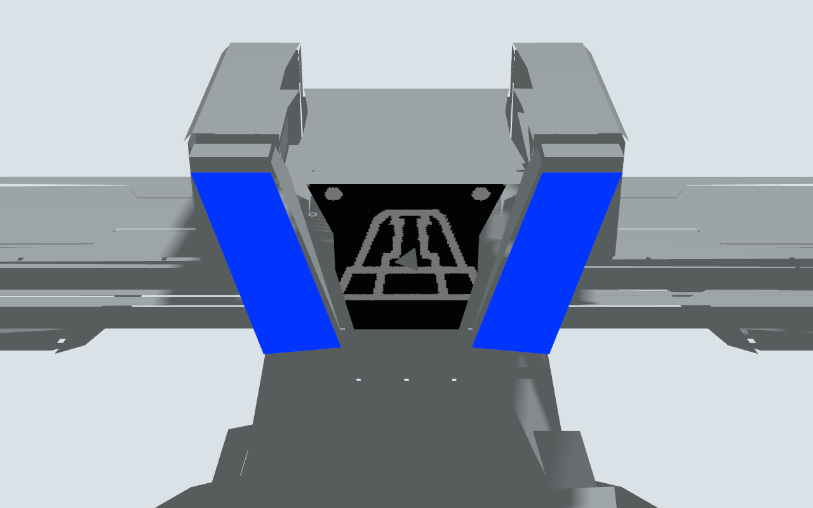

目标为 Sentry26 原基地顶部滑轨中央板件。几何从原网格分离，原轨道保留；正面蓝色区域与中央基地标志附着于原表面，碰撞仍使用原板件网格。滑轨范围 ±0.22 m、速度 0.2 m/s 是可调仿真参数。

检测参考 chenjunnn/rm_auto_aim 的灯条配对和 IPPE PnP，适配代码保留 MIT 版权与许可。原板发光区呈梯形，因此采用上下不同间距的四端点模型，普通平行灯条模式仍可用于原有测试。
运行日志中的 visual_pose 表示视觉 PnP 结果，impact_candidate 用于定位冲击漏报原因，impact 表示控制端确认。物理命中由 truth_evaluation_only_contacts.jsonl 中 enemy_armor_contact 单独核验。
单机完成一次真实板件命中、返航和解除武装，离地至完成 36.17 s，返航偏差 0.008 m。四机测试仍存在轻微接触的 IMU 漏报，尚未通过全队完整任务；不以状态机完成代替物理命中核验。
实验台“⑦ Gazebo 多机”选“多机轮流撞击与返航”，勾选定位飞行后启动。当前桌面程序需要 OpenCV core/imgproc/calib3d/imgcodecs；RV 交叉编译默认不包含 OpenCV，未部署该依赖时不能执行这条视觉任务。
此版本识别蓝色灯条与几何，中央标志用于正确显示，尚未接入数字/类别神经网络。真实相机需标定内参与畸变，并按安装位置设置外参。旧固定表面 30 秒记录不代表移动装甲任务速度。